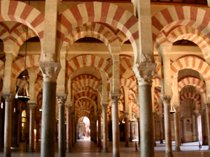
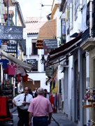
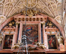
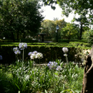
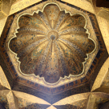

CORDOBA
Friday, July 2
We took the 9:45 train from Sevilla to Cordoba, where we met our guide, Juan, who introduced us to his city by telling us that it was once one of the most important cities in Europe. It was settled first by the Romans, who saw the advantages of being on the river.
We toured the old city, visiting first the Alcazar of the Christian monarchs, “a fine example of military architecture”. It was here that Ferdinand and Isabella sent Columbus off on his journey, but was also the headquarters of the Spanish Inquisition for 3 centuries. The gardens were glorious, and included 2 long pools, and beautiful and fragrant plants (jasmine, eucalyptus, roses, magnolias). From here we went to the Jewish quarter (including a very old but very small temple), where we learned that Maimonides was an important, learned rabbi. Then we saw a small church that had Arab (lettering praising God) as well as Christian (paintings of humans) architecture. Finally, we went to Mezquita, the site of a Catholic cathedral built right in the center of an Islam mosque, which had been built over an even older Catholic church!
Juan suggested we have lunch at El Caballo Rojo (the red horse) restaurant, where we enjoyed yet another version of gazpacho (this one was thick, sprinkled with cured ham and drizzled with olive oil), cuttlefish in vinegar (well, George did anyway), fried calamari, and sautéed mushrooms. And of course it was all washed down with vino blanco (Karen), agua sin gas (Claire) and beer (George and the police who were on break there!).
We wandered around a bit more, checking out all the shops. Karen bought a fun silver bracelet dripping with dice and a handmade leather box. Claire got a beautiful turquoise bracelet. George got to carry everything!
Then we took the 5:44 train back to Sevilla, where we rested a bit (and Karen writhed in anger because none of the TV stations were carrying the Wimbledon semifinal match – Nadal is a Spaniard for crying out loud!) before heading to the corner bar to watch the Ghana/Uruguay football game. We were rooting for Ghana since they had beat the U.S. (feeling that we wanted to have been beaten by a worthy team), but alas, they lost in penalty kicks after missing a chance to win in overtime with a crazy hand ball in the goal. Dinner at the bar (Levies II) was surprisingly good – nachos for Claire, pork cheeks (that tasted just like pot roast), chicken in mustard sauce, Caesar salad, margarita pizza and drum roll please…a death by chocolate cake that was to die for!

A City Steeped in History


This provincial capital is known chiefly for its mosque, the world-famous Mezquita. The old Arab and Jewish quarters are famous for their narrow streets lined full of whitewashed houses with flower-filled patios and balconies.



